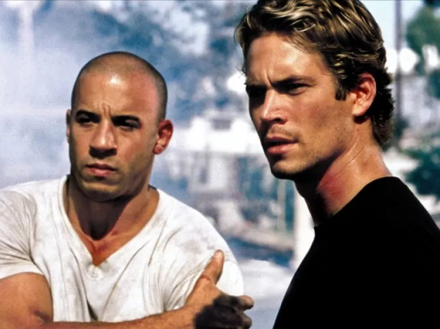

Velozes e Furiosos (2001)
Dominic Toretto (Vin Diesel) é o líder de uma gangue de corridas de ruas em Los Angeles que está sendo investigado pela polícia por roubo de equipamentos eletrônicos. Para investigá-lo é enviado Brian O'Conner (Paul Walker), que se infiltra na gangue na intenção de descobrir se Toretto é realmente o autor dos crimes ou se há alguém mais por trás deles.